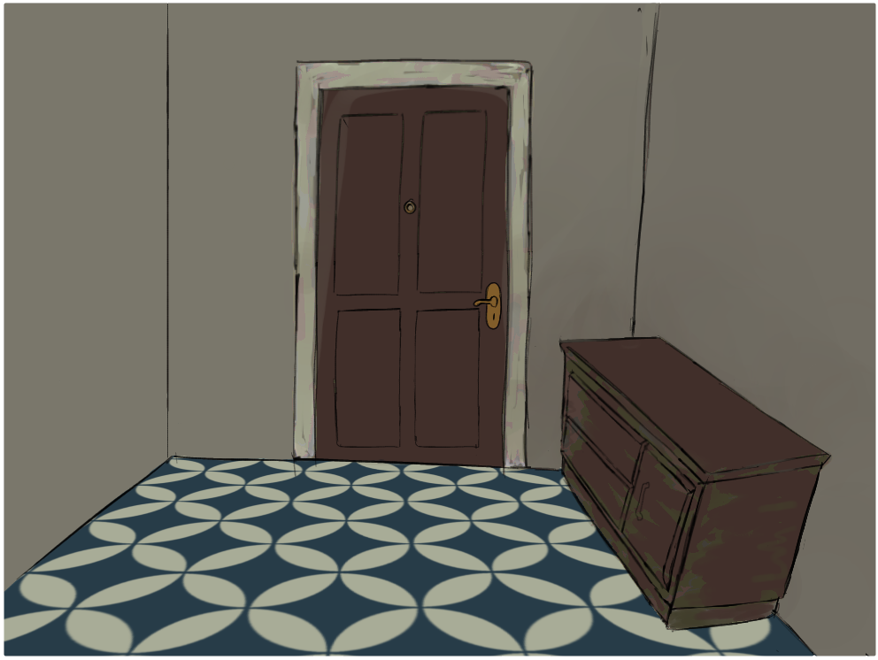
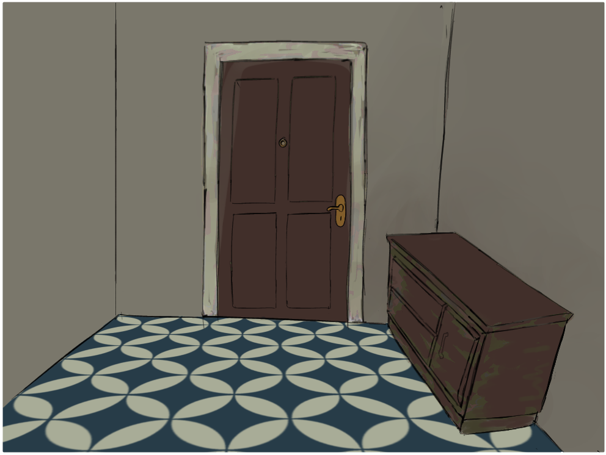

Es de día, pero aun así el ambiente está muy oscuro
Parece que alguien está tocando la puerta...
¿La vas a abrir?
Pronto llegará alguien misterioso, no lo conoces pero aún
así tendrás que abrir la puerta.
Decide bien que es lo que harás.
Un error podría ser fatal.
Parece que alguien está tocando la puerta...
¿La vas a abrir?
